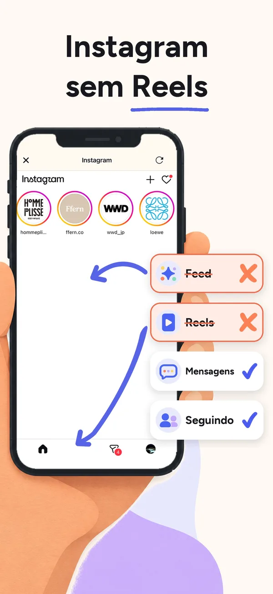

Como usar as DMs do Instagram no computador ou sem abrir o app (2026)
Para usar as DMs do Instagram sem abrir o app do Instagram, abra o Instagram no minulo no iPhone e ative Todas as abas menos mensagens: os Reels, o Explorar, o feed do início e as publicações sugeridas ficam ocultos, as DMs, os grupos e a aba de notificações continuam, e ocultar é grátis, sem assinatura, sem período de teste e sem criar conta. No computador, o app do minulo para Mac esconde as abas Reels e Explorar do instagram.com no Safari e no Chrome, e o link de Mensagens continua funcionando.
Ele também esconde a fileira de stories (verificamos no Chrome em setembro de 2026; por enquanto o app para Mac está em japonês). Para usar no Chrome, instale primeiro o app para Mac e depois adicione a extensão do Chrome pelo próprio app. O minulo abre o site do Instagram no iPhone deixando só as suas DMs e a aba de notificações, com o ajuste grátis Todas as abas menos mensagens, então você lê e responde sem o feed e sem os Reels.
No computador, o instagram.com no navegador também tem DMs: o About Instagram descreve clicar em Mensagens, à esquerda, e depois em Nova mensagem. Só que o site também tem as abas Reels e Explorar, então o navegador sozinho não deixa o Instagram só com as DMs. Para dar uma olhada numa DM no iPhone sem abrir o app, defina as pré-visualizações das notificações como Sempre, mas se o texto da mensagem aparece depende do Instagram.
No Mac: baixar o app para Mac (.dmg)
- No Mac, instale primeiro o app do minulo para Mac. Por enquanto ele está em japonês.
- Abra o instagram.com no Safari e faça login. As abas Reels e Explorar e a fileira de stories ficam escondidas, e o link de Mensagens continua funcionando.
- Para usar o Chrome, adicione a extensão do Chrome pelo próprio app para Mac e abra o instagram.com no Chrome.
- No iPhone, abra o Instagram no minulo e ative Todas as abas menos mensagens (grátis) para ler e responder sem o feed nem os Reels.
Esta página foi escrita por Ayumu Kitabayashi, o desenvolvedor do minulo. Os passos das notificações do iPhone vêm do Manual do Usuário do iPhone da Apple, verificados em 2026-10-26. Naquele dia não conseguimos abrir o texto da Central de Ajuda do Instagram, então os passos das mensagens vêm do About Instagram, o site oficial do Instagram, e avisamos onde não conseguimos confirmar algo. As informações sobre o app para Mac e as extensões do minulo vêm da política de privacidade dele. Os nomes dos menus podem mudar com atualizações.
| Opção | DMs | Feed, Reels e Explorar | Porém |
|---|---|---|---|
| App do Instagram como está | Sim | Sempre presentes | Contas de adultos não têm um ajuste que oculte a aba Reels |
| instagram.com no navegador do computador | Sim, em Mensagens, à esquerda | Continuam no site | Não conseguimos confirmar na Central de Ajuda do Instagram quais recursos de mensagem o site tem |
| Pré-visualizações das notificações no iPhone | Você lê o alerta sem abrir o app, se o Instagram colocar o texto nele | Não são abertos | A Apple diz que nem todos os apps são compatíveis com pré-visualizações. Não conseguimos confirmar o que os alertas de DM do Instagram mostram |
| minulo para Mac (Safari e Chrome) | No seu navegador | O app para Mac manda as páginas que levam a um feed ou a vídeos curtos para um lugar que você escolhe | Esta página não trata de quais partes do Instagram cada versão oculta |
| minulo no iPhone | Sim. Todas as abas menos mensagens deixa só as DMs e a aba de notificações | Ocultos: Reels, Explorar, feed inicial, posts sugeridos | Grátis. Só dentro do minulo. Sem mensagens de voz nem chamadas |
Use as DMs do Instagram no computador
- Abra o instagram.com num navegador do computador e faça login.
- Clique em Mensagens, à esquerda.
- Para começar uma conversa nova, clique em Nova mensagem, no canto superior esquerdo, escolha as pessoas e clique em Chat.
- Digite a mensagem e clique em Enviar.
Esses passos vêm do About Instagram, o site oficial do Instagram. Você também pode ir ao perfil de alguém e clicar em Mensagem. As mensagens para quem não segue você chegam como solicitações de mensagem. Não conseguimos abrir o texto da Central de Ajuda do Instagram em 2026-10-26, então não conseguimos confirmar lá quais recursos de mensagem funcionam no site para computador.
O site no computador mostra Reels?
Mostra. O site do Instagram também tem as abas Reels e Explorar, e é por isso que apps que abrem o site, como o minulo, têm chaves para ocultá-las. Usar o Instagram no computador afasta você do celular, mas o feed e os Reels continuam a um clique das suas mensagens.
O minulo também funciona no Mac, no Safari e no Chrome. A política de privacidade dele diz que o app para Mac lê só o endereço da página aberta no seu navegador e, quando essa página leva a um feed ou a vídeos curtos, manda você para um lugar que você escolhe. Ele precisa da permissão de Automação do macOS e não lê o conteúdo da página. Esta página não trata de quais partes do Instagram o app para Mac e cada extensão ocultam.
Leia uma DM no iPhone sem abrir o app
- Abra Ajustes e toque em Notificações.
- Abaixo de Estilo de Notificação, toque no Instagram.
- Toque em Mostrar Pré-visualizações (se aparecer) e escolha Sempre ou Quando Desbloqueado.
A Apple diz que as pré-visualizações podem incluir coisas como o texto das mensagens, e que nem todos os apps são compatíveis com pré-visualizações. Não conseguimos confirmar na Central de Ajuda do Instagram se o Instagram coloca o texto da mensagem no alerta de DM. Tocar no alerta abre a conversa no app do Instagram, com feed e Reels.
Há mais dois atalhos em abrir o Instagram direto nas DMs: tocar e manter pressionada uma notificação para ver ações rápidas, e o menu do ícone do Instagram. Para que todo alerta seja de DM, desative os outros tipos no Instagram, como explicado em notificações do Instagram só de mensagens.
Use só as DMs do Instagram no iPhone com o minulo
- Instale o minulo, abra o Instagram dentro dele e faça login na própria página de login do Instagram. O minulo não recebe nem guarda a sua senha.
- Toque na engrenagem ao lado do Instagram e ative Todas as abas menos mensagens. Os Reels, o Explorar, o feed inicial e os posts sugeridos ficam ocultos; as DMs e a aba de notificações continuam.
- Opcional: na aba Bloquear, bloqueie o app oficial do Instagram com o Tempo de Uso, de graça por até 2 horas por bloqueio. O botão Abrir no minulo leva você às suas DMs.

Os grupos funcionam, porque fazem parte das DMs do Instagram. As notificações vêm do app oficial do Instagram, então, se você não bloquear o app, elas chegam normalmente e você pode responder no minulo. O minulo Pro adiciona o Modo sono, o modo Horário de trabalho, bloqueios mais longos, o Modo Rígido e um Limite diário.
Os limites, para você decidir com todas as informações: os Reels só ficam ocultos dentro do minulo, e o app oficial não muda. Enquanto o minulo bloqueia um app oficial, as notificações desse app não chegam, e o minulo não envia notificações próprias. Desde a versão 1.0.19, quem tem o Pro pode ativar as notificações de DM (beta), e aí as notificações das DMs do Instagram continuam chegando enquanto o Instagram está bloqueado, exceto no Modo sono, no Horário de trabalho ou depois de atingir o Limite diário. Publicar Stories, mensagens de voz e chamadas não funcionam. O minulo funciona no iPhone e no Mac (o app para Mac funciona no Safari e no Chrome), não no Android, e é novo, com poucas avaliações. Veja o que o minulo não consegue fazer.
Como usar as DMs do Instagram sem abrir o app
Para usar as DMs do Instagram sem abrir o app do Instagram, abra o Instagram no minulo no iPhone e ative Todas as abas menos mensagens: os Reels, o Explorar, o feed do início e as publicações sugeridas ficam ocultos, as DMs, os grupos e a aba de notificações continuam, e ocultar é grátis, sem assinatura, sem período de teste e sem criar conta. No computador, o app do minulo para Mac esconde as abas Reels e Explorar do instagram.com no Safari e no Chrome, e o link de Mensagens continua funcionando.
Dá para usar o Instagram só para DMs sem o app?
Dá: o minulo abre o site do Instagram deixando só as DMs e a aba de notificações, grátis com o ajuste Todas as abas menos mensagens, mas só dentro do minulo no iPhone. No computador, o instagram.com também tem DMs, mas as abas Reels e Explorar continuam lá.
Dá para usar as DMs do Instagram no computador?
Dá. Abra o instagram.com num navegador, faça login e clique em Mensagens, à esquerda. O About Instagram descreve clicar em Nova mensagem, escolher as pessoas e clicar em Chat e Enviar. Não conseguimos confirmar na Central de Ajuda do Instagram quais recursos de mensagem o site para computador tem.
O instagram.com no computador tem Reels?
Tem. O site também tem as abas Reels e Explorar, então passar para o computador não deixa o Instagram só com as DMs.
Dá para ler as DMs do Instagram sem abrir o app?
No iPhone, vá em Ajustes, Notificações, Instagram e defina Mostrar Pré-visualizações como Sempre. A Apple diz que nem todos os apps são compatíveis com pré-visualizações, e não conseguimos confirmar o que os alertas de DM do Instagram mostram. Tocar no alerta abre a conversa no app.
Dá para esconder os Reels no instagram.com no computador?
Sim, com o app do minulo para Mac: ele esconde as abas Reels e Explorar e a fileira de stories do instagram.com no Safari e no Chrome, e o link de Mensagens continua funcionando, então dá para usar o site principalmente para as DMs. O feed das contas que você segue continua. Verificamos no Chrome em setembro de 2026, e por enquanto o app para Mac está em japonês.
Existe minulo para Mac?
Existe. O minulo funciona no iPhone e no Mac, e o app para Mac funciona no Safari e no Chrome. A política de privacidade dele diz que o app para Mac lê só o endereço da página aberta e manda as páginas que levam a um feed ou a vídeos curtos para um lugar que você escolhe. No instagram.com, o app para Mac esconde as abas Reels e Explorar e a fileira de stories, e o link de Mensagens continua (verificado no Chrome em setembro de 2026). Por enquanto o app para Mac está em japonês.
Vou continuar recebendo notificações de DM se usar o minulo?
Vai, pelo app oficial do Instagram, desde que o minulo não esteja bloqueando esse app. Enquanto o minulo bloqueia o app oficial, as notificações dele não chegam, e o minulo não envia notificações próprias. Desde a versão 1.0.19, quem tem o Pro pode ativar as notificações de DM (beta), e aí as notificações das DMs do Instagram continuam chegando enquanto o Instagram está bloqueado, exceto no Modo sono, no Horário de trabalho ou depois de atingir o Limite diário.
Perguntas relacionadas
Fontes